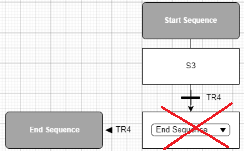

Saving & Debugging the Sequences
Managing a sequence
As long as you have not clicked the Build  icon or the Save
icon or the Save  icon, the name of the modified sequences features a * mark.
icon, the name of the modified sequences features a * mark.
To rename a sequence, right-click the tab label and edit it. However, the list described in Sequence Management is not refreshed even after saving.
Debugging
To check the overall sequences of all the Procedural CATs:
-
Click the
icon in the ribbon. All the sequences are parsed regardless of the current selections. In case of error, a message pops up in the bottom left corner.
-
Move the border to reveal the Message Log pane. It contains a message by invalid Procedural CAT with up two readable diagnostics.
-
Spot a Procedural CAT in the File column.
-
Read the information, especially the labels and double-click the spotted row. This opens the Procedural CAT in the latest opened sub-tab (even if it is valid).
-
Select a sub-tab according to the incriminated labels.
List of main messages:
|
Message |
Diagnostic |
|
Node End Sequence must be connected to start sequence |
The flow is not continuous, possibly because of a jump to end (see hereunder example). Or a jump is invalid. |
|
Object reference not set to an instance of an object |
Connections are missing. In a simultaneous branching, a branch contains a jump that keeps it from reaching the collector. |
|
Node xxx must be connected to start sequence |
The upstream connector is not engaged or the downstream jump is not valid. |
|
Sxx has error: Forbidden target: a jump can only lead to a step in t |
|
|
Sxx has error: Forbidden target: a jump cannot lead to its source |
Sxx is the destination of a downstream jump (infinite loop). See second hereunder example. |
|
DIVANDxx has error: Graph has not the same number of AND input convergences and output divergences |
Divider and collector have not the same count of engaged connectors. |
|
 |
|